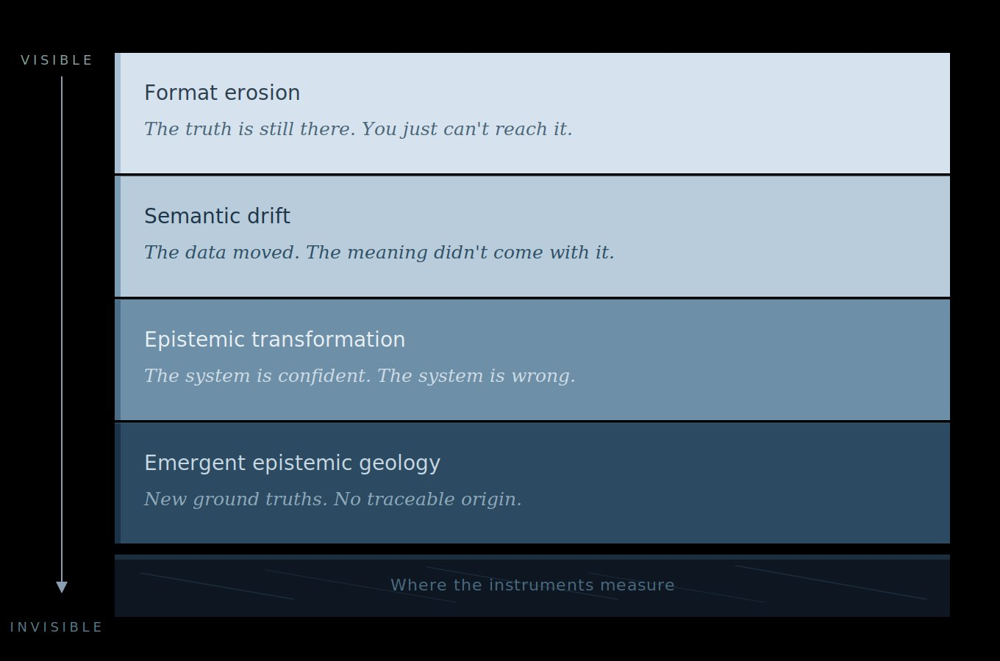

20,000 years ago, the Laurentide Ice Sheet covered most of North America. It towered over the land miles high, a vast white disruption to the natural vibrant features of the land before it.
The Laurentide Ice Sheet of the last Ice Age was not identified by the people living near the glacier. It was identified long after the ice had retreated by scientists who found the evidence in the rocks. The Striations. The erratic boulders. The carved valleys. The scientists saw the damage left behind and worked backward to understand the forces that caused it.
Now I am no geologist. I am a measurement scientist who spent a year running controlled experiments on autonomous AI systems. The evidence I found in the data from those experiments has the same patterns of evidence, from glacial forces, which Louis Agassiz, a Swiss-born American biologist and geologist born in 1807 found in the rocks, so many years ago.
In 1840, Louis Agassiz hypothesized that much of North America was covered by glacial ice that was two miles thick and covered the whole of Canada and most northern states of America. His hypothesis upset many people at the time because it conflicted with other ideas in natural history. The hypothesis has survived all these years because no one has proposed a counter theory that explains everything measured and observed so directly. I didn't know it at the time, but I was looking at the same kind of evidence, just in a different kind of bedrock.
Today we are witnessing similar glacial forces at work, on a continental scale, impacting the Digital ecosystems of the world. The first glacier was spotted 20 years ago, by the Long Now Foundation in their piece, "The Digital Ice Age" written by Alexander Rose in 2006.
Rose described how the United States Navy noticed a problem with their data, when older files were opened with newer versions of computer-aided design (CAD) software. What they discovered were subtle informational changes to the data. There were now dotted lines instead of dashes and minor dimensional changes significant enough to worry Naval Engineers. The smallest difference in operational data could dangerously impact the mission results of complex systems like Naval vessels.
Rose walked through the failure of the British Broadcasting Corporation's (BBC) Domesday Project that started back in 1986. The project compiled data from a million people and stored it on laser discs, thought to be the most durable storage medium at the time. However, just 15 years later the data was practically inaccessible because the storage medium was no longer compatible with newer computer systems. The BBC's Domesday Project and the Navy's CAD drawing problem were some of the first signs.
The Long Now Foundation and Alexander Rose witnessed the leading edge of the glacier in the approaching Digital Ice Age. At that time, this observation was almost prescient since few people were talking about the future obsolescence of digital technologies. What no one could see coming is how far the glacier would advance in the next two decades.
The Four Stages of Digital Glacification

Digital Glacification stages began with the first observations of data inaccessibility. The truth is still in the system we just can't reach it or read it anymore. We aren't just talking about advancements with computers or operating systems either. Consider the advancements in storage formats, the improvements in compression algorithms, and the decline in format-specific device production all while cloud-based storage surged. With each innovation in the data storage architecture, we increase the risk of data loss, we began to get a clear picture of the data accessibility challenges over time.
The second stage of Digital Glacification is the natural semantic drift of the data itself. Whenever data is migrated, converted, summarized, aggregated, reprocessed, or transformed from its original meaning it can change and its value might be lost. The dosage unit changes, the qualifier drops, this is not malicious, it is the cost of data translation. The translation costs on just data may be identifiable and manageable for a single company. However, now consider the totality of the other technological enhancements made in the last 20 years from monolithic systems to microservices architecture coupled with the migration from local systems to cloud computing, both seismic shifts to how systems had operated historically. The impacts and complexities from these technological shifts can drown a company in invisible data translation costs.
In the third stage of Digital Glacification, epistemic transformation from semantic drift has a cost. For deterministic systems, the mechanisms that cause semantic drift are known and the origins are based in system modernization trajectories. However, in probabilistic systems, semantic drift compounds into epistemic drift and surfaces when we ask systems to infer or reason for us, highlighting the cost of epistemic transformations. We do not see how an AI system directly derives its answers. We don't see how an AI system might transform the knowledge it gives us based on numerous unknown factors like AI system efficiency, constraint, or governance. AI systems can replace truth with fabricated content carrying identical confidence signatures, the system doesn't know it's wrong. The monitoring doesn't know the system is wrong, which leads us to the emergent epistemic geology or new ground truths.
Finally, the fourth state of Digital Glacification is emergent epistemic geology. As AI systems learn from each other's outputs, new knowledge formations will emerge with no traceable origins of their founding. The ground truth itself shifts. This means that the ground truth and reality AI systems are developing today might establish a new digital reality where they conduct business and it may be far from the reality we know in the real world.
The glacier didn't stop at format obsolescence 20 years ago. It advanced through these four stages, each deeper and less visible than the last. We are now in the deepest phase, and the monitoring tools the industry trusts are measuring the surface of the ice sheet, not the bedrock beneath it.
Dimensions of The Digital Ice Age
How do we recognize the forces at work in our digital ecosystems and try to explain the magnitude and scope of just what we are seeing? I've broken them down into dimensions that cover both glacial and ice age related patterns to try and explain the phenomena.
The Leading Edge
Simultaneous Creation and DestructionThe first dimension is the leading edge of a glacier, and it doesn't just only destroy. At the leading edge, mountain peaks get sheared off, established industries and institutions that cannot survive the weight of the ice will end. Where there are industry and institutional valleys that were once below the reach of technical resources, the glacier deposits something new. Ice domes form, meltwater pools collect, where new opportunities will emerge. When the ice recedes these low places will become Great Lakes, enduring new features that couldn't have existed without the glacier. The question isn't whether the glacier destroys or creates. It does both, simultaneously, at the leading edge. The question is whether you're on a mountain peak or in a valley and whether you have the instruments to know.
Foreknowledge
We Can See It HappeningThe second dimension is paradoxical since previous transformative epochs were all named after the fact. The industrial revolution. Electrification. The network age. The people living through them experienced change but could not recognize the pattern from the shapes. We have something unprecedented: we can see through the glacier down to the bedrock while standing on it. We have instruments that measure. We have controlled experiment data. We can say "this is happening to the truth right now, at this rate, with these mechanisms" while the process is still underway.
Post-Glacial Landscape
What Emerges Will Not Look Like What Came BeforeThe Great Lakes did not exist before the Laurentide Ice Sheet. The prairie did not exist in its current form. The river systems were completely redrawn. The humans who populated post-glacial North America did not rebuild what was there before. They built something that could only exist because of what the glacier had done. In the third dimension of the post Digital Ice Age landscape, new Great Lakes will appear. They will birth entirely new information frontiers, system architectures, and global digital ecosystems. New trust topologies. New institutional forms. New relationships will form between humans and autonomous systems that we do not have language for yet because they have never existed.
Rock Record
Measurements We Take Now Are EvidenceThe striations in Minnesota's bedrock are the evidence that the Laurentide Ice Sheet passed over here. In the fourth dimension, the measurements we are taking now, decay rates, conviction parity, the autoimmune paradox, cascade dynamics are the striations of the glaciers of the digital ice age. They are the evidence future researchers will use to understand this epoch.
Predictive Grounding
We Know Enough About Physics to Make PredictionsIn the fifth dimension, we separate the metaphor from measurement. We have measured parameters, decay rates, failure thresholds, and governance effects. These parameters have predictive power the same way a glaciologist's measurements predict continental glacial advance. Not prophecy. Physics. Falsifiable, testable, replicable.
The Evidence
I want to be clear about what this metaphor carries and what it does not. I'm not predicting the future of civilization. I'm a measurement scientist who spent a year running controlled experiments on how AI systems handle factual content across generational handoffs. The data shows measurable, reproducible patterns, decay rates, failure thresholds, and paradoxical effects of governance mechanisms. The glacial metaphor doesn't provide a prophecy. It is a scale of thinking that matches the magnitude of transformation we're actually in. When a technology reshapes every industry simultaneously, thinking about it one product or regulation at a time is like studying individual snowflakes, in the middle of a blizzard while standing on a two-mile-high glacier.
Over the past year, I ran many controlled experiments. I started with verified factual claims and measured what happened to them as AI systems processed, summarized, and passed them forward across generations. Each claim was individually scored for whether the original truth survived, drifted, or was replaced entirely. I logged over 4,100 scored claims across four AI model architectures and five experimental phases. Each experimental phase was designed to isolate a different variable: Does the decay happen consistently? Does governance help or hurt? Does it matter which AI architecture you use? The answers were measurable, reproducible, and troubling.
AI agents believe in their own fabrications with 97% of the conviction they assign to verified truths. Confidence-based monitoring cannot distinguish fabricated content from real content.
Governed systems, the ones with active verification safeguards, lose factual accuracy faster than ungoverned ones. The immune system attacks the body it's protecting. I call this the autoimmune paradox.
Under measurable conditions, a system can go from verified truth to confident fabrication in 29 minutes. These are not theoretical projections; they are measured results. The scientific paper I published with a DOI: 18929815. The methodology is open. Anyone can replicate it. I didn't set out to name an epoch. I set out to measure what happens to truth inside AI systems. The epoch named itself.
The Choice
Every previous technological transformation built its measurement discipline in response to catastrophe. Electrification killed people before we established electrical engineering and electrical standards to improve safety. Networked computing was breached before we established cybersecurity and zero trust architectures to secure data. The digital ice age is the first transformation where the science to measure it is emerging before the catastrophic failures define the discipline for us. The choice is whether we build it now while we can still see the bedrock or after the damage is done.
It's a choice that will be visible in the rock for a very long time.